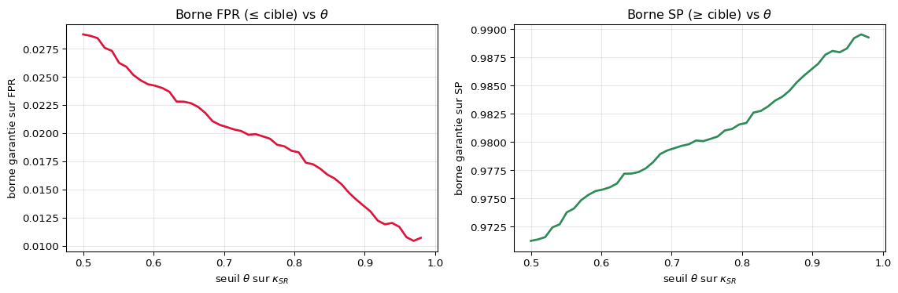
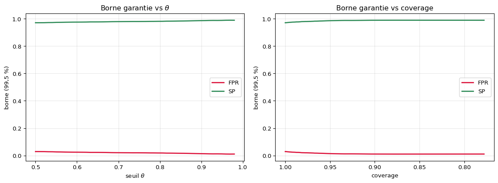

Run : density__resnet18_pretrained-pos3__20260429-134215
Images : 7179 | positifs : 5.3 %
Accuracy globale (coverage = 1) : 95.67 %
… mais taux de faux négatifs (FNR) global : 45.1 %Abstention — Des métriques conditionnelles garanties
FPR, FNR, PPV, SE, SP et l’algorithme SGP par recherche gloutonne (Algorithm 2)
Ce notebook prolonge Abstention — Du score softmax au seuil garanti, qui présentait l’Algorithme 1 (recherche par dichotomie) pour le risque 0/1 inconditionnel. On suppose ici acquis : la fonction de confiance Softmax Response \(\kappa_{\text{SR}}\), la règle de sélection \(g_\theta(x) = \mathbb{1}\{\kappa(x) \geq \theta\}\), et la borne probabiliste \(B^\star\) issue de l’inversion de la queue binomiale.
Le présent document traite l’Algorithme 2 (recherche gloutonne) et les métriques conditionnelles : FPR, FNR, PPV, sensibilité, spécificité.
Partie I — Pourquoi le risque 0/1 ne suffit pas
1. Le problème : toutes les erreurs ne se valent pas
L’Algorithme 1 garantit le risque 0/1 : la proportion d’erreurs, toutes confondues. En imagerie médicale, ce chiffre global cache l’essentiel. Sur un dépistage où ~5 % des images sont positives, un modèle qui prédit toujours “négatif” atteint déjà ~95 % d’accuracy — tout en ratant 100 % des cancers.
Ce qui compte cliniquement, ce sont des taux conditionnés à une classe :
- un faux négatif (rater un cancer) n’a pas le même coût qu’un faux positif (une patiente saine rappelée pour rien) ;
- on veut donc contrôler séparément le taux de faux négatifs (FNR), la sensibilité (SE), la valeur prédictive positive (PPV)…
Une accuracy flatteuse peut coexister avec un FNR catastrophique. C’est exactement la raison d’être de l’Algorithme 2 : garantir une métrique conditionnelle, pas seulement le risque moyen.
2. Les cinq métriques conditionnelles
On note, sur le sous-ensemble accepté \(S_\theta = \{x : \kappa(x) \geq \theta\}\), les comptes TP / FP / FN / TN usuels. Les métriques implémentées dans emp_metric sont :
| Métrique | Définition | Sens visé | Dénominateur (classe conditionnante) |
|---|---|---|---|
| FPR | \(\dfrac{FP}{FP + TN}\) | borne supérieure (\(\leq r^\star\)) | négatifs (\(y=0\)) |
| FNR | \(\dfrac{FN}{FN + TP}\) | borne supérieure (\(\leq r^\star\)) | positifs (\(y=1\)) |
| PPV | \(\dfrac{TP}{TP + FP}\) | borne inférieure (\(\geq r^\star\)) | prédits positifs (\(\hat y=1\)) |
| SE | \(\dfrac{TP}{TP + FN}\) | borne inférieure (\(\geq r^\star\)) | positifs (\(y=1\)) |
| SP | \(\dfrac{TN}{TN + FP}\) | borne inférieure (\(\geq r^\star\)) | négatifs (\(y=0\)) |
La différence fondamentale avec le risque 0/1 : ces métriques sont des ratios dont le dénominateur est aléatoire (il dépend du nombre de positifs/négatifs tombés dans \(S_\theta\)). C’est ce qui empêche d’appliquer directement la borne binomiale et impose la machinerie de la Partie III.
Métriques globales sur le run (coverage = 1) :
FPR = 2.0 %
FNR = 45.1 %
PPV = 60.1 %
SE = 54.9 %
SP = 98.0 %Partie II — La borne pour une métrique conditionnelle
3. Décomposer le ratio : numérateur borné, dénominateur minoré
Toutes ces métriques s’écrivent comme un ratio \(\frac{A}{C}\) où :
- le numérateur \(A\) est un compte d’erreurs (FP ou FN) — exactement le type de quantité que \(B^\star\) sait borner par le haut ;
- le dénominateur \(C\) est une proportion de classe (négatifs, positifs, ou prédits positifs) — une moyenne empirique qu’on minore par Hoeffding.
Pour le FPR par exemple :
\[ \text{FPR} = \frac{\Pr[\,\hat y = 1,\ y = 0\,]}{\Pr[\,y = 0\,]} \;\;\leq\;\; \frac{B^\star\ (\text{borne sur le numérateur})}{\underbrace{\,\hat p_0 - d_2\,}_{\text{minorant du dénominateur}}} \]
Le terme \(d_2\) est la marge de Hoeffding sur la proportion de la classe conditionnante :
# abstention_module/sgp_utils.py — upper_bound_denominator
d2 = np.sqrt(n * np.log(2 / delta) / 2) / selected_samples.shape[0]
d1 = selected.y_pred.mean() if metric == "PPV" else selected.y_true.mean()
# FPR, SP → 1 - d1 - d2 (conditionne sur les négatifs)
# FNR, SE, PPV → d1 - d2 (conditionne sur les positifs / prédits positifs)4. De \(B^\star\) à la borne de la métrique
La fonction bound assemble le tout. Pour une métrique à majorer (FPR, FNR) on divise ; pour une métrique à minorer (PPV, SE, SP) on prend le complément :
# abstention_module/sgp_utils.py — bound
def bound(b, selected_samples, delta, metric, n):
if metric in ["standard", "FP", "FN"]:
B = b # Algo 1 : pas de dénominateur
elif metric in ["FPR", "FNR"]:
B = b / upper_bound_denominator(metric, selected_samples, delta, n)
else: # PPV, SE, SP
B = 1 - b / upper_bound_denominator(metric, selected_samples, delta, n)
return BEt la condition d’arrêt dépend du sens de la métrique :
# abstention_module/sgp_utils.py — satisfied
def satisfied(bound, r_star, metric):
if metric in ["standard", "FP", "FN", "FPR", "FNR"]:
return bound <= r_star # métriques d'erreur : on veut une borne SUP basse
else:
return bound >= r_star # PPV/SE/SP : on veut une borne INF hauteL’union bound, version conditionnelle. Pour une métrique conditionnelle on mobilise deux estimations probabilistes par valeur de \(\theta\) (le numérateur via \(B^\star\) et le dénominateur via Hoeffding). D’où, dans le code, un budget de confiance \(\delta / (2 k_2)\) au lieu de \(\delta / k_2\) : le facteur 2 paie la borne sur le dénominateur (Proposition 3 du papier).
5. À quoi ressemble la borne en fonction de \(\theta\) ?
C’est ici que tout bascule par rapport à l’Algorithme 1. La borne du risque 0/1 était monotone en \(\theta\) (plus on est sélectif, moins il y a d’erreurs, plus la borne baisse). La borne conditionnelle, elle, ne l’est pas forcément : en montant \(\theta\), le dénominateur rétrécit (moins de positifs/négatifs survivent dans \(S_\theta\)), ce qui peut faire exploser le ratio. On le voit directement avec bound_evo_w_theta :

À gauche, la borne FPR (qu’on majore) n’est pas régulièrement décroissante : le bruit du dénominateur la rend irrégulière, et au-delà d’un certain \(\theta\) elle devient même non-calculable (plus assez de négatifs → dénominateur négatif → on arrête la courbe). À droite, la borne inférieure de SP. Dans les deux cas, la courbe n’est pas monotone : une dichotomie pourrait sauter par-dessus la bonne valeur. D’où l’algorithme glouton.
Partie III — L’Algorithme 2 : recherche gloutonne sur \(\theta\)
6. L’idée
Puisque la borne n’est pas monotone, on ne peut plus dichotomiser. On balaie une grille fixe de \(k_2\) valeurs de \(\theta\) du plus petit au plus grand (donc du coverage le plus grand au plus petit) et on renvoie le premier \(\theta\) dont la borne satisfait la cible. Premier \(\theta\) qui marche = \(\theta\) le plus bas = coverage maximal parmi les seuils admissibles.
thetas ← grille de k2 points entre theta_min et theta_max (ordre croissant)
pour theta dans thetas : # coverage décroissant
S_theta ← Sn[kappa ≥ theta]
e ← erreurs (FP ou FN selon la métrique) sur S_theta
si e == 0 : retourner {} # borne bloquée, inutile de continuer
b ← B_star(delta / (2·k2), e, |S_theta|) # numérateur (facteur 2 = dénominateur)
B ← bound(b, S_theta, …, metric) # ratio → borne de la métrique
si satisfied(B, r*, metric) : retourner theta # 1er seuil OK = coverage max
retourner {} # aucune valeur n'atteint la ciblePourquoi la grille de taille \(k_2\) ? L’Algorithme 1 raffinait \(\theta\) par dichotomie (\(k_1 = 6\) évaluations). L’Algorithme 2 teste les \(k_2 = 50\) points d’une grille indépendante des données \(S_n\) — c’est ce qui permet d’appliquer proprement l’union bound \(\delta / k_2\) (ou \(\delta / 2k_2\) en conditionnel).
# abstention_module/sgp_utils.py — paramètres
K2 = 50
DELTA = 5e-37. La fonction sgp_greedy_search annotée
# abstention_module/sgp_utils.py — sgp_greedy_search (extrait)
metric_loss_mapping = { # quelle erreur compter au numérateur
"FPR": "FP", "SP": "FP", "PPV": "FP",
"FNR": "FN", "SE": "FN",
}
thetas = np.linspace(theta_min, theta_max, k2)[:-1] # grille croissante
for theta in thetas:
selected = Sn.loc[Sn.kappa >= theta]
e = emp_errs_count(selected, loss=metric_loss_mapping[metric])
if e == 0: # aucune erreur observée :
return {} # B* coince à 1-δ^(1/n), inutile d'insister
b = ( B_star(delta / k2, e, |selected|) if metric in ["standard","FP","FN"]
else B_star(delta / (2*k2), e, |selected|) ) # ← facteur 2 (Prop. 3)
B = bound(b, selected, delta / k2, metric, n=Sn.shape[0])
if satisfied(B, r_star, metric): # 1er θ admissible → coverage maximal
return {"theta_star": theta, "bound": B, "delta": delta,
"coverage": selected.shape[0] / Sn.shape[0],
"emp_metric": emp_metric(selected, metric=metric)}
return {} # cible jamais atteinte sur la grilleLe cas e == 0 mérite un mot : s’il n’y a aucune erreur (FP ou FN) sur le sous-ensemble accepté, \(B^\star\) vaut \(1 - \delta^{1/n}\) et ne descendra plus en balayant — on sort immédiatement plutôt que de boucler dans le vide. C’est le pendant conditionnel de la condition terminale de l’Algorithme 1.
8. Algorithme 1 vs Algorithme 2 — récapitulatif
| Algorithme 1 (dichotomie) | Algorithme 2 (greedy) | |
|---|---|---|
| Métriques | risque 0/1, FP, FN (inconditionnels) | FPR, FNR, PPV, SE, SP (conditionnels) |
| Hypothèse clé | borne monotone en \(\theta\) | borne non monotone tolérée |
| Recherche | dichotomie, \(k_1 = 6\) évaluations | balayage de \(k_2 = 50\) points |
| Union bound | \(\delta / (2^{k_1} - 1)\) | \(\delta / k_2\), ou \(\delta / 2k_2\) (conditionnel) |
| Dénominateur | aucun | minoré par Hoeffding (\(d_2\)) |
| Critère | \(B^\star \leq r^\star\) | satisfied(B, r*, metric) selon le sens |
| Sélection | plus petit \(\theta\) admissible | premier \(\theta\) admissible (coverage max) |
Le moteur glouton est strictement plus général : avec
metric="standard"il retrouve le cadre de l’Algorithme 1 (sans dénominateur). C’est pour cela quesgp_at_targetsprend simplement un argumentmode ∈ {"dicho", "greedy"}.
Partie IV — Démo sur un run réel
9. Bornes garanties vs \(\theta\) et vs coverage
On balaie l’ensemble de la grille avec reachable_bounds pour les deux métriques que ce modèle parvient à garantir : FPR (à majorer) et SP (à minorer). Chaque courbe est la borne garantie à 99,5 %, pas la métrique empirique.

Lecture : à coverage = 1 (tout à gauche du seuil, tout à droite du coverage), FPR et SP valent leur niveau global. En s’abstenant (coverage qui baisse), on resserre la garantie sur FPR et on remonte la garantie sur SP — jusqu’au point où le dénominateur devient trop incertain et où la borne cesse d’être informative.
10. Calibration aux cibles — le tableau
Pour chaque cible \(r^\star\), sgp_at_targets en mode greedy renvoie le \(\theta^\star\) trouvé sur le set de calibration, la borne, et la métrique mesurée sur le set de test (jamais vu pendant la calibration).
Calibration SGP greedy — FPR (sens ≤ r*, δ = 5e-3) :
r* θ* bound cov. train FPR test cov. test
0.05 0.5000 0.031 100.0% 1.8% 100.0%
0.04 0.5000 0.031 100.0% 1.8% 100.0%
0.03 0.5408 0.030 99.7% 1.6% 99.8%
Calibration SGP greedy — SP (sens ≥ r*, δ = 5e-3) :
r* θ* bound cov. train SP test cov. test
0.95 0.5000 0.970 100.0% 97.9% 100.0%
0.97 0.5102 0.970 99.9% 97.9% 100.0%
0.98 0.8367 0.980 96.5% 99.4% 95.9%
Lecture du tableau :
- r* : niveau de la métrique qu’on veut garantir.
- θ* : seuil renvoyé par le balayage glouton (premier admissible).
- bound : borne garantie — par construction \(\leq r^\star\) (FPR) ou \(\geq r^\star\) (SP).
- cov. : proportion d’images sur lesquelles on accepte de prédire.
- {métrique} test : valeur empirique sur le set de test ; elle doit respecter la garantie avec probabilité \(\geq 1 - \delta = 99{,}5\,\%\).
11. Quand le greedy renvoie “vide” — le piège du déséquilibre
Sur ce run, FNR, PPV et SE ne donnent aucune cible atteignable. Ce n’est pas un bug : le modèle prédit très rarement “positif” (dépistage à ~5 % de positifs), donc le dénominateur conditionnel (nombre de positifs ou de prédits-positifs dans \(S_\theta\)) est minuscule, sa marge de Hoeffding \(d_2\) l’emporte, et la borne devient non-informative. La fonction renvoie alors {}.
Métriques 'positifs-dépendantes' sur ce run déséquilibré :
FNR (global = 45.1 %) → AUCUNE cible atteinte (dénominateur trop incertain)
PPV (global = 60.1 %) → AUCUNE cible atteinte (dénominateur trop incertain)
SE (global = 54.9 %) → AUCUNE cible atteinte (dénominateur trop incertain)Leçon pratique : garantir une métrique conditionnelle sur la classe rare exige beaucoup de données de cette classe. Pour contrôler le FNR d’un dépistage, il faut un set de calibration riche en positifs — sinon aucune garantie non triviale n’est possible, quel que soit le seuil.
12. Contrôler plusieurs métriques à la fois (bonus)
joint_control cherche les intervalles de \(\theta\) qui satisfont simultanément plusieurs cibles, en intersectant les segments admissibles de chaque métrique. Utile quand le cahier des charges clinique impose, par exemple, FPR ≤ 5 % et SP ≥ 95 % en même temps.
Contrainte jointe FPR ≤ 0.05 ET SP ≥ 0.95 :
intervalles de θ admissibles : [(np.float64(0.5), np.float64(0.9795918367346939))]
meilleur θ (coverage max) : 0.5000 → coverage 100.0 %
à ce θ : FPR = 2.0 % SP = 98.0 %Références
Geifman, Y. & El-Yaniv, R. (2017). Selective Classification for Deep Neural Networks. NeurIPS. arXiv:1705.08500 — Algorithm 2 (recherche gloutonne) et la borne \(B^\star\).
Propositions 2–3 (bornes des métriques conditionnelles) : décomposition numérateur (\(B^\star\)) / dénominateur (Hoeffding), implémentée dans
boundetupper_bound_denominator.Balsubramani, A. et al. (2019). Borne alternative Éq. (11) pour FPR/FNR/PPV, reproduite dans
eq11_boundpour comparaison.
Annexes : fichiers du module
| Fichier | Rôle |
|---|---|
abstention_module/sgp_utils.py |
sgp_greedy_search, bound, upper_bound_denominator, satisfied, reachable_bounds, joint_control |
abstention_module/math_utils.py |
B_star, binom_sum — la borne probabiliste du numérateur |
abstention_module/preprocessing.py |
Construction du sgp_set (κ, y_pred, y_true) et train_test_split |
abstention_module/algo2.py |
Script de démo : produit toutes les figures FPR/FNR/PPV/SE/SP d’un run |
abstention_module/algo1.py |
Équivalent pour les risques inconditionnels (Algorithme 1, dichotomie) |
13. Comment l’utiliser à l’inférence
Identique à l’Algorithme 1 : une fois \(\theta^\star\) calibré pour la métrique visée,
Le seuil \(\theta^\star\) encapsule la garantie — cette fois sur la métrique conditionnelle choisie (FPR, SP, …) et non plus seulement sur le risque 0/1.